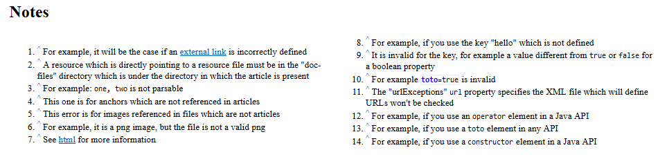

Home
Categories
Dictionary
Download
Project Details
Changes Log
What Links Here
How To
Syntax
FAQ
License
Regular article
1 Meta and altTitle elements
1.1 Meta element
1.2 AltTitle element
1.2.1 Automatically removing alternate titles from the dictionary
1.3 meta and altTitle ordering
2 Article XML attributes
3 Notes chapter
3.1 Example
4 See also chapter
5 Examples
6 Notes
7 See also
1.1 Meta element
1.2 AltTitle element
1.2.1 Automatically removing alternate titles from the dictionary
1.3 meta and altTitle ordering
2 Article XML attributes
3 Notes chapter
3.1 Example
4 See also chapter
5 Examples
6 Notes
7 See also
Regular articles are the pages composing the wiki, similar to Wikipedia articles.
A regular article has the top-level element "article". It can contain:
Note that by default if no "meta" element exists for an article the first line of text of an article will be used to be put in the dictionary and categories.
For example:
This element has the following attributes:
For example:
For example, if this option is set to true, and we have the following article declaration:
It is still possible to overwrite this behavior by using the "dictionary" or "dictionnary" attribute for an article.
Depending on the "notesTwoColumns" command-line or configuration file property, the nodes can be presented on one or two columns (false by default which means that the nodes are presented on only one column)[1]
Note that the "notesTwoColumns" attribute on the article can override this specification:
A regular article has the top-level element "article". It can contain:
- An optional list of alternate titles for the article
- A meta element at the top of the article, specifies the text which should be written as an explanation for an article in the dictionary or categories
- An optional SeeAlso element allowing to reference another article which title or subject might be close ot this one
- Paragraphs, which in turn can contain various construction elements. See syntax
- Chapters and titles. See chapters and titles
- An optional "Notes" chapter, if there are notes in the article. See notes chapter
- An optional "See Also" chapter. See see also
- Categories definition. See categories description
Meta and altTitle elements
Meta element
The "meta" element specifies the text which should be written as an explanation for an article in the dictionary and categories.Note that by default if no "meta" element exists for an article the first line of text of an article will be used to be put in the dictionary and categories.
For example:
<meta desc="This text will appear in the dictionary and categories listings" />
AltTitle element
The "altTitle" elements allows to specify alternate titles for the article. These titles will be used for the dictionary, the categories, and even the autocomplete search box. You can have as many alternate titles as you want for an article.This element has the following attributes:
- "desc": the alternate article description
- "keepCase": (optional) true if the alternate article description case should be kept as is (which means that the first character won't be forced as UpperCase in the HTML output)
- "dictionary" or "dictionnary": (optional) false if the alternate title should not be put in the dictionary and categories
For example:
<article desc="article name"> <altTitle desc="the other name" /> </article>
Automatically removing alternate titles from the dictionary
If the the command-line pruneAltTitles argument (or the associated configuration file property) is set to true, then alternate titles are automatically pruned in the dictionary and categories if their text is sufficiently similar to the article title. However these alternate titles will still be used in the search box.For example, if this option is set to true, and we have the following article declaration:
<article desc="hot spot"> <altTitle desc="hot-spot" /> </article>Then the "hot-spot" alternate title won't be added in the dictionary and the categories.
It is still possible to overwrite this behavior by using the "dictionary" or "dictionnary" attribute for an article.
meta and altTitle ordering
Any ordering is allowed between the meta and alternate titles elements. For example, both the following structures are valid:<article desc="article1"> <meta desc="this article is about" /> <altTitle desc="alternate title 1" /> <altTitle desc="alternate title 2" /> </article>and:
<article desc="article1"> <altTitle desc="alternate title 1" /> <altTitle desc="alternate title 2" /> <meta desc="this article is about" /> </article>
Article XML attributes
An article has the following attributes:- "desc": the article description
- "id": (optional) an alternate article ID
- "syntax": specifies the syntax of the article. By default it will use the general setting property (see Relaxed Syntax). However it is possible to override this setting by setting one of the following values for this attribute:
- "strict": override the syntax to be strict for the article
- "relaxed": override the syntax to be relaxed for the article
- "keepCase": (optional) true if the article description case should be kept as is (which means that the first character won't be forced as UpperCase in the HTML output)
- "justify": the justification of the text in the article. See the Justification article for more information
- "toc": (optional) false if the Table of contents should not be presented at the beginning of the article. By default the table of contents of the article is presented at the beginning of the article if there are more than 3 titles of any level in the article. See also table of content configuration
- "notesTwoColumns": (optional) specifies if the article notes chapter presents notes on one or two columns. See also notes chapter.
Notes chapter
An optional "Notes" chapter will be added if there are notes in the article.Depending on the "notesTwoColumns" command-line or configuration file property, the nodes can be presented on one or two columns (false by default which means that the nodes are presented on only one column)[1]
Note that it does not really specifies that the notes must be presented on two columns, but it sets the "column-width" CSS attribute to 30em
.Note that the "notesTwoColumns" attribute on the article can override this specification:
- "false": the notes chapter is on one column
- "true": the notes chapter is on two columns
- "default": (or the attribute is absent) the notes chapter has the number of column specified by the configuration

Example
A basic example:<article desc="an article" notesTwoColumns="true"> This is a very simple article. </article>
See also chapter
A "See Also" chapter will be added at the end of all the article chapters if there is at least one "see" element at the end of the article (just before the categories if there are categories). All the "see" elements will be presented in a bulleted list.Examples
A basic example:<article desc="an article"> This is a very simple article. </article>Another simple example, using the "see" tag, and specifying a category for the article.
<article desc="an article"> This is a very simple article. <see id="anotherArticle" desc="the other linked article" text="example of a SeeAlso element" /> <cat id="myCategory" /> </article>A more complex example, using the "seeAlso", "altTitle", and "meta" tags.
<article desc="an article"> <altTitle desc="second title" > <meta desc="A Very simple article example" > <seeAlso this="describing an article" other="specifying another type of article" id="another article" > This is a very simple article. <see id="anotherArticle" desc="the other linked article" text="example of a SeeAlso element" /> <cat id="myCategory" /> </article>
Notes
See also
- Types of files: This article explains the types of files which can be found in the wiki input
×

Categories: Structure | Syntax